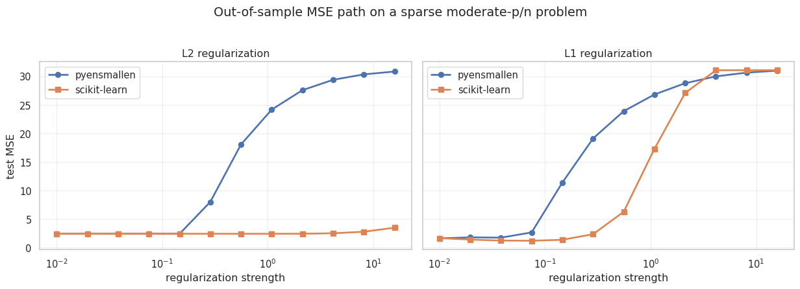

import os
import sys
import warnings
candidate_roots = [
os.getcwd(),
os.path.abspath(".."),
os.path.abspath(os.path.join("..", "..")),
]
repo_root = next(
path
for path in candidate_roots
if os.path.exists(os.path.join(path, "pyensmallen", "__init__.py"))
)
if repo_root not in sys.path:
sys.path.insert(0, repo_root)
sys.meta_path = [
finder
for finder in sys.meta_path
if getattr(finder.__class__, "__module__", "") != "_pyensmallen_editable_loader"
]
warnings.filterwarnings("ignore", message=".*joblib will operate in serial mode.*")
warnings.filterwarnings("ignore", category=FutureWarning, module="sklearn")
import matplotlib.pyplot as plt
import numpy as np
import pandas as pd
import seaborn as sns
from scipy.special import expit
from sklearn.linear_model import Lasso, LogisticRegression as SkLogit, PoissonRegressor, Ridge
from sklearn.metrics import (
accuracy_score,
log_loss,
mean_poisson_deviance,
mean_squared_error,
)
import pyensmallen as pe
sns.set_theme(style="whitegrid")
rng = np.random.default_rng(12345)Regularized Estimators and scikit-learn Comparison
This notebook demonstrates the new regularized estimator API in pyensmallen. When alpha > 0, the linear, logistic, and Poisson estimator classes switch from unconstrained L_BFGS to exact Frank-Wolfe optimization over either an L2 ball (l1_ratio=0.0) or an L1 ball (l1_ratio=1.0).
The second half of the notebook compares pyensmallen with scikit-learn on a moderate p versus n linear problem and plots out-of-sample MSE over a grid of regularization strengths.
Moderate p versus n: out-of-sample MSE path
We now generate a sparse linear problem with p=120 features and only n=200 training observations. The goal is not to numerically match scikit-learn’s penalty parameterization exactly. Instead, the same grid of regularization strengths is used in both libraries so we can compare the shape of the MSE path and the best achievable out-of-sample error.
Two comparisons are shown:
pyensmallenL2-constrained fit vs scikit-learn RidgepyensmallenL1-constrained fit vs scikit-learn Lasso
n_train, n_test, p = 200, 2000, 120
n_active = 12
alpha_grid = np.logspace(-2, 1.2, 12)
X_train = rng.normal(size=(n_train, p))
X_test = rng.normal(size=(n_test, p))
beta_true = np.zeros(p)
active = rng.choice(p, size=n_active, replace=False)
beta_true[active] = rng.normal(loc=0.0, scale=1.5, size=n_active)
intercept_true = 0.5
y_train = intercept_true + X_train @ beta_true + rng.normal(scale=1.0, size=n_train)
y_test = intercept_true + X_test @ beta_true + rng.normal(scale=1.0, size=n_test)
print(f"train shape: {X_train.shape}, test shape: {X_test.shape}")
print(f"nonzero coefficients: {n_active}")train shape: (200, 120), test shape: (2000, 120)
nonzero coefficients: 12rows = []
for alpha in alpha_grid:
py_l2 = pe.LinearRegression(alpha=float(alpha), l1_ratio=0.0).fit(X_train, y_train)
py_l1 = pe.LinearRegression(alpha=float(alpha), l1_ratio=1.0).fit(X_train, y_train)
sk_ridge = Ridge(alpha=float(alpha), fit_intercept=True).fit(X_train, y_train)
sk_lasso = Lasso(alpha=float(alpha), fit_intercept=True, max_iter=10000, tol=1e-6).fit(X_train, y_train)
for model_name, model, penalty in [
("pyensmallen-l2", py_l2, "l2"),
("pyensmallen-l1", py_l1, "l1"),
("sklearn-ridge", sk_ridge, "l2"),
("sklearn-lasso", sk_lasso, "l1"),
]:
rows.append(
{
"alpha": alpha,
"model": model_name,
"penalty": penalty,
"train_mse": mean_squared_error(y_train, model.predict(X_train)),
"test_mse": mean_squared_error(y_test, model.predict(X_test)),
"coef_l1": np.linalg.norm(model.coef_, 1),
"coef_l2": np.linalg.norm(model.coef_, 2),
}
)
results = pd.DataFrame(rows)
results.head()| alpha | model | penalty | train_mse | test_mse | coef_l1 | coef_l2 | |
|---|---|---|---|---|---|---|---|
| 0 | 0.010000 | pyensmallen-l2 | l2 | 0.300465 | 2.424340 | 26.118816 | 5.381626 |
| 1 | 0.010000 | pyensmallen-l1 | l1 | 0.578212 | 1.615896 | 19.914086 | 5.318775 |
| 2 | 0.010000 | sklearn-ridge | l2 | 0.297860 | 2.427721 | 26.179356 | 5.403925 |
| 3 | 0.010000 | sklearn-lasso | l1 | 0.331483 | 1.656856 | 22.333471 | 5.330794 |
| 4 | 0.019539 | pyensmallen-l2 | l2 | 0.298860 | 2.423294 | 26.105470 | 5.379762 |
best_by_model = (
results.sort_values("test_mse")
.groupby("model", as_index=False)
.first()[["model", "alpha", "train_mse", "test_mse", "coef_l1", "coef_l2"]]
.sort_values("test_mse")
)
best_by_model| model | alpha | train_mse | test_mse | coef_l1 | coef_l2 | |
|---|---|---|---|---|---|---|
| 2 | sklearn-lasso | 0.074598 | 0.662303 | 1.202322 | 17.055005 | 5.084258 |
| 0 | pyensmallen-l1 | 0.010000 | 0.578212 | 1.615896 | 19.914086 | 5.318775 |
| 3 | sklearn-ridge | 1.087336 | 0.300220 | 2.418005 | 25.950701 | 5.322411 |
| 1 | pyensmallen-l2 | 0.145759 | 0.298654 | 2.419524 | 26.050077 | 5.358361 |
fig, axes = plt.subplots(1, 2, figsize=(13, 4.5), sharey=True)
curve_specs = [
("l2", [("pyensmallen-l2", "pyensmallen", "o"), ("sklearn-ridge", "scikit-learn", "s")], "L2 regularization"),
("l1", [("pyensmallen-l1", "pyensmallen", "o"), ("sklearn-lasso", "scikit-learn", "s")], "L1 regularization"),
]
for ax, (penalty, curves, title) in zip(axes, curve_specs):
panel = results.loc[results["penalty"] == penalty]
for model_name, label, marker in curves:
curve = panel.loc[panel["model"] == model_name].sort_values("alpha")
ax.plot(
curve["alpha"],
curve["test_mse"],
marker=marker,
linewidth=2,
label=label,
)
ax.set_xscale("log")
ax.set_title(title)
ax.set_xlabel("regularization strength")
ax.grid(True, alpha=0.3)
axes[0].set_ylabel("test MSE")
axes[0].legend(frameon=True)
axes[1].legend(frameon=True)
fig.suptitle("Out-of-sample MSE path on a sparse moderate-p/n problem", y=1.03)
fig.tight_layout()
plt.show()
Takeaways
- The same estimator interface now covers unregularized and exact constrained regularized fits.
- The regularized
pyensmallenfits quietly switch to Frank-Wolfe on the backend. - On this sparse moderate-
pproblem, the L1 path is much more competitive than the L2 path, which is what we would expect. - The MSE curves have the same broad shape as the scikit-learn baselines, even though the two libraries do not use identical regularization parameterizations.